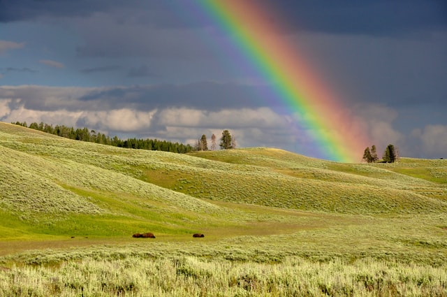

About Rainbows
A rainbow is a multicolored arc made by light striking water droplets. The most familiar type rainbow is produced when sunlight strikes raindrops in front of a viewer at a precise angle (42 degrees). Rainbows can also be viewed around fog, sea spray, or waterfalls. A rainbow is an optical illusion—it does not actually exist in a specific spot in the sky. The appearance of a rainbow depends on where you're standing and where the sun (or other source of light) is shining.
Rainbows are actually full circles. The antisolar point is the center of the circle. Viewers in aircraft can sometimes see these circular rainbows. Viewers on the ground can only see the light reflected by raindrops above the horizon. Because each person's horizon is a little different, no one actually sees a full rainbow from the ground. In fact, no one sees the same rainbow—each person has a different antisolar point, each person has a different horizon. Someone who appears below or near the "end" of a rainbow to one viewer will see another rainbow, extending from his or her own horizon.
